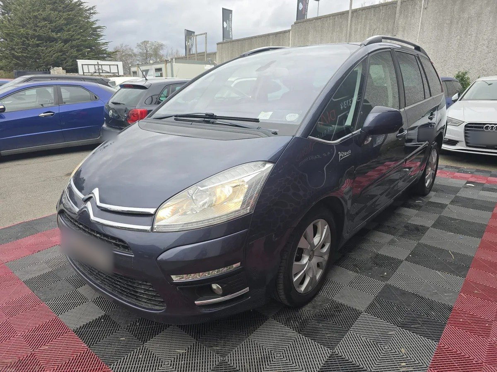

Andrew의 아일랜드 동행
안녕하세요, 서현 Andrew입니다
김서현 (Andrew Seohyeon Kim) · 직접 운전하고 한국어로 안내합니다

운영자 Andrew의 이야기
유럽에서 6년 넘게 운전했습니다. 처음에는 한인 단톡방에서 공항 픽업이나 이사를 부탁받아 도와 드리던 일이었습니다. 부탁이 소개로 이어지고 소개가 쌓이면서, 지금은 공항 픽업·로드트립·이사·성지순례·맞춤 여행 다섯 가지를 한 대의 차로 운영합니다.
그사이 더블린 무료 한국어 워킹투어를 정기적으로 열었고, 대전교구 아일랜드 성지순례단을 9일 일정으로 안내했고, 한국 기자단의 더블린 취재를 도왔습니다. 레지오 마리애 세계 본부 (Concilium)에서는 한국어 통역 봉사를 하고 있습니다.
- 운전
- 유럽 6년 이상
- 투어
- 더블린 무료 워킹투어 운영
- 성지순례
- 대전교구 아일랜드 성지순례단 가이드
- 취재
- 한국 기자단 더블린 안내
- 통역 봉사
- 레지오 마리애 본부 (Concilium)
- 공동체
- 아일랜드천주교한인공동체 청년회장
- 언어
- 한국어·영어
이 일을 하는 이유
투어버스
이 동행
투어버스는 정해진 코스를 정해진 시간에 영어로 돕니다. 이 동행은 사진을 찍고 싶은 곳에서 멈추고, 배고프면 같이 밥을 먹습니다. 길 위에서 궁금한 것을 그때그때 한국어로 물어볼 수 있는 여행을 만들고 싶었습니다.
- 받은 요금픽업·여행·이사
- 운영비·차량 예비비먼저 뺍니다
- 음악 봉사 예산Classical Music for Everyone
이 일은 제 본업이 아닙니다. 수익은 운영비와 차량 예비비를 뺀 전액이 음악 봉사 프로젝트 Classical Music for Everyone의 예산으로 쌓입니다. 그래서 가격은 원가를 메우고 봉사 예산이 남는 선에서 정합니다. 적립 방식은 아래에 그대로 적어 두었습니다.
차량


- 탑승 좌석
- 7
- 최대 적재 (좌석 접음)
- 1,800L
- 캐리어 (2열을 접으면 더 많이)
- 4~6
- 최대 길이
- 220cm
- 적재 폭
- 120cm
- 적재 높이
- 90cm
이 차량은 응원해 주신 분들의 펀딩으로 마련했습니다. 평일에는 공항 픽업·이사·여행 동행으로 운영하고, 주말과 휴일에는 Classical Music for Everyone의 연주자와 악기를 싣고 음악이 필요한 곳으로 갑니다.
음악이 필요한 곳으로 찾아가는 봉사 프로젝트
공연장에 오기 어려운 분들을 찾아가 작은 음악회를 엽니다. 이 동행 서비스는 그 예산을 만드는 수단입니다.
왜 시작했나
클래식 음악이 콘서트홀 안에만 머물지 않게 하려고 시작했습니다. 듣고 싶은 사람이 있는 곳이면 공연장 밖 어디서든 연주합니다.
여행이 곧 후원이 되는 구조
픽업·여행·이사로 받은 금액은 운영 실비와 차량 예비비를 뺀 전액이 이 프로젝트의 봉사 예산으로 쌓입니다.
어디로 찾아가나
요양원, 병원, 학교, 지역 커뮤니티처럼 음악이 일상에 닿기 어려운 곳으로 찾아가 작은 음악회를 엽니다. 함께할 연주자와 장소를 늘려 가는 중입니다.
지금까지 이 동행으로 적립된 음악 봉사 예산
€—
어떻게 적립되나
- 받은 금액에서 시작합니다. 입장료처럼 대신 결제해 드린 돈은 애초에 제 몫이 아니라 여기서 빠집니다.
- 운영 실비를 뺍니다. 연료(주행 1km당 €0.15)·톨비·주차비 등 그날 쓴 실비입니다.
- 차량 예비비를 뺍니다. 주행 1km당 €0.33이며, 정비·보험·타이어·감가를 미리 떼어 두는 몫입니다.
- 남는 전부가 음악 봉사 예산으로 적립됩니다. 정해진 비율이 아니라 말 그대로 나머지 전액입니다.
그래서 한 건에 얼마가 적립되는지는 코스마다 다릅니다. 장거리일수록 예비비가 커져 적게 남고, 가까운 픽업이 오히려 많이 남기도 합니다. 건별 예상액을 미리 말씀드리지 않고 실제로 쌓인 누계만 적어 두는 이유입니다.
음악이 필요한 곳을 알고 계시거나, 후원·연주자 참여·협업을 생각하신다면 연락 주세요.